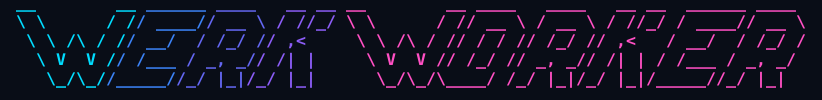

Interaktives Terminal
Antworten live verfolgen, laufende Aufgaben steuern und Werkzeugaktionen freigeben. Der kurze Aufruf lautet ww.
Lokale Agent Engine · Rust
werkWorker übersetzt Modellantworten in Aktionen im Arbeitsverzeichnis. Ein interaktives Terminal und ein einbettbares Rust-SDK nutzen dieselbe Agent Engine – mit expliziten Berechtigungen und persistenten Sitzungen.

$ ww tui --demo "Hello"Offline-Demo · ein erster Blick ins Terminal
werkWorker + Werk1112
Werk1112 übernimmt Inferenz und Modell-Runtimes. werkWorker steuert die Unterhaltung, Werkzeuge und den Ablauf einer Aufgabe.
Antworten live verfolgen, laufende Aufgaben steuern und Werkzeugaktionen freigeben. Der kurze Aufruf lautet ww.
Ressourcenrechte und Freigaben für vorbereitete Aktionen steuern den Zugriff. Die Isolation von Datei- und Prozesszugriffen benötigt derzeit Linux.
SQLite-basierte Sitzungen speichern Ereignisse und unterstützen Folgeaufgaben, Abbruch und Wiederaufnahme. Die Engine ist über Rust und ein JSONL-Protokoll nutzbar.
Schnellstart
Mit Rust ab Version 1.88 aus dem Repository bauen. Die Demo läuft offline; für echte Modellanfragen wird ein Werk-Server verbunden.
git clone https://github.com/philipbodenbach/werkWorker.git
cd werkWorker
cargo install --path . --locked
ww tui --demo "Hello"
ww --helpInstalliert werden ww und werk-worker. Die Offline-Demo verwendet vorgegebene Antworten und kein Live-Modell.
Lab
Ein kleines Experiment mit einem spielbaren Ergebnis. Den vollständigen Bericht und die Aufnahme gibt es im Lab von Philip Bodenbach.
Experiment · Oktober 2026
Schraffierte Spielsteine, animiertes Filmkorn und Web Audio. Entstanden mit werkWorker und Werk1112; das ursprüngliche Ergebnis ist eine einzige, eigenständige HTML-Datei.
Originalergebnis · Desktop mit Tastatur · kein Backend nötig
Dokumentation
Architektur, Schnittstellen und Plattformgrenzen sind gemeinsam mit dem Quellcode dokumentiert.